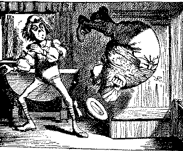

THE Caterpillar and Alice looked at each other for some time in silence: at last the Caterpillar took the hookah out of its mouth, and addressed her in a languid sleepy voice.
"Who are you?" said the Caterpillar.
This was not an encouraging opening for a conversation. Alice replied, rather shyly, "I--I hardly know, sir, just at present--at least I know who I was when I got up this morning, but I think I must have been changed several times since then."
"What do you mean by that?" said the C aterpillar sternly. "Explain yourself!"
"I can't explain myself, I'm afraid, sir," said Alice, "because I'm not myself, you see."
"I don't see," said the Caterpillar.
"I'm afraid I can't put it more clearly," Alice replied very politely, "for I can't understand it myself to begin with; and being so many different sizes in a day is very confusing."
"It isn't," said the Caterpillar.
"Well, perhaps you haven't found it so yet," said Alice; "but when you have to turn into a chrysalisyou will some day, you know--and then after that into a butterfly, I should think you'll feel it a little queer, won't you?"
"Not a bit," said the Caterpillar.
"Well, perhaps your feelings may be different," said Alice; "all I know is, it would feel very queer to me."
"You!" said the Caterpillar contemptuously. "Who are you?"
Which brought them back again to the beginning of the conversation. Alice felt a little irritated at the caterpillar's making such very short remarks, and she drew herself up and said, very gravely, "I think you ought to tell me who you are, first."
"Why?" said the Caterpillar.
Here was another puzzling question; and as Alice could not think of any good reason, and as the Caterpillar seemed to be in a very unpleasant state of mind, she turned away.
"Come back!" the Caterpillar called after her. "I've something important to say!"
This sounded promising, certainly: Alice turned and came back again.
"Keep your temper," said the Caterpillar.
"Is that all?" said Alice, swallowing down her anger as well as she could.
"No," said the Caterpillar.
Alice thought she might as well wait, as she had nothing else to do, and perhaps after all it might tell her something worth hearing. For some minutes it puffed away without speaking, but at last it unfolded its ams, took the hookah out of its mouth again, and said, "So you think you're changed, do you ?"
"I'm afraid I am, sir," said Alice; "I can't remember things as I used--and I don't keep the same size for ten minutes together!"
"Can't remember what things?" said the Caterpillar.
"Well, I've tried to say 'How doth the little busy bee,' but it all came different!" Alice replied in a very melancholy voice.
"Repeat 'You are old, Father William,' " said the Caterpillar.
Alice folded her hands, and began:---
"You are old, Father William," the young man said, "And your hair has become very white; And yet you incessantly stand on your head-- Do you think, at your age, it is right?" "In my youth," Father William replied to his son, "I feared it might injure the brain; But, now that I'm perfectly sure I have none, Why, I do it again and again."  "You are old," said the youth, "as I mentioned before, And have grown most uncommonly fat; Yet you turned a back-somersault in at the door-- Pray, what is the reason of that?" "In my youth," said the sage, as he shook his grey locks, "I kept all my limbs very supple by the use of this ointment--one shilling the box-- Allow me to sell you a couple?" "You are old," said the youth, "and your jaws are too weak For anything tougher than suet; Pet you finished the goose, with the bones and the beak-- Pray, how did you manage to do it?" "In my youth said his father, "I took the law. And argued each case with my wife; And the muscular strength, which it gave to my jaw, Has lasted the rest of my life." "You are old," said the youth, "one would hardly suppose That your eye was as steady as ever; Yet you balanced an eel on the end of your nose-- What made you so awfully clever?" "I have answered three questions, and that is enough," Said his father; "don't give yourself airs! Do you think I can listen all day to such stuff? Be off, or I'll kick you downstairs!"
"That is not said right," said the Caterpillar.
"Not quite right, I'm afraid," said Alice, timidly; some of the words have got altered."
"It is wrong from beginning to end," said the Caterpillar decidedly, and there was silence for some minutes.
The Caterpillar was the first to speak.
"What size do you want to be?" it asked.
"Oh, I'm not particular as to size," Alice hastily replied; "Only one doesn't like changing so often, you know."
"I don't know," said the Caterpillar.
Alice said nothing: she had never been so much contradicted in all her life before, and she felt that she was losing her temper.
"Are you content now?" said the Caterpillar.
"Well, I should like to be a little larger, sir, if you wouldn't mind," said Alice: "three inches is such a etched height to be."
"It is a very good height indeed!" said the C aterpillar angrily, rearing itself upright as it spoke (it was exactly three inches high).
"But I'm not used to it!" pleaded poor Alice in a piteous tone. And she thought to herself, "I wish the creatures wouldn't be so easily offended!"
"You'll get used to it in time," said the C aterpillar; and it put the hookah into its mouth and began smoking again.
This time Alice waited patiently until it chose to speak again. In a minute or two the Caterpillar took the hookah out of its mouth and yawned once or twice, and shook itself. Then it got down off the mushroom, and crawled away into the grass merely remarking as it went, "One side will make you grow taller, and the other side will make you grow shorter."
"One side of what? The other side of what. thought Alice to herself.
"Of the mushroom," said the Caterpillar, just if she had asked it aloud; and in another moment it was out of sight.
Alice remained looking thoughtfully at the mushroom room for a minute, trying to make out which we the two sides of it; and as it was perfectly round, she found this a very difficult question. However, at last she stretched her arms round it as far as they would go, and broke off a bit of the edge with each hand
"And now which is which?" she said to herself, and nibbled a little of the right-hand bit to try the effect; the next moment she felt a violent blow underneath her chin: it had struck her foot!
She was a good deal frightened by this very sudden change, but she felt that there was no time to be lost, as she was shrinking rapidly; so she set to work at once to eat some of the other bit. Her chin was pressed so closely against her foot, that there was hardly room, to open her mouth; but she did it at last, and managed to swallow a morsel of the left-hand bit.
"Come, my head's free at last!" said Alice in a tone of delight, which changed into alarm in another moment, when she found that her shoulders were nowhere to be found: all she could see, when he looked down, was an immense length of neck, which seemed to rise like a stalk out of a sea of green leaves that lay far below her.
"What can all that green stuff be?" said Alice. "And where have my shoulders got to?' And oh, my poor hands, how is it I can't see you?" She was moving them about as she spoke, but no result seemed to follow, except a little shaking among the distant green leaves.
As there seemed to be no chance of getting her ands up to her head, she tried to get her head down to them, and was delighted to find that her neck would bend about easily in any direction, like a serpent. She had just succeeded in curving it own into a graceful zigzag, and was going to dive in among the leaves, which she found to be nothing ut the tops of the trees under which she had been wandering, when a sharp hiss made her draw back in a hurry: a large pigeon had flown into her face, and was beating her violently with its wings.
"Serpent!" screamed the Pigeon.
"I'm not a serpent!" said" Alice indignantly. "Let me alone!"
"Serpent, I say again!" repeated the Pigeon, but in a more subdued tone, and added with a kind of sob, "I've tried every way, and nothing seems to suit them!"
"I haven't the least idea what you're talking about," said Alice.
"I've tried the roots of trees, and I've tried, banks and I've tried hedges," the Pigeon went on, without attending to her; "but those serpents! There's no pleasing them!"
Alice was more and more puzzled, but she thought there was no use saying anything more till the Pigeon had finished.
"As if it wasn't trouble enough hatching the eggs," said the Pigeon; "but I must be on the look out for serpents night and day! Why, I haven't had a wink of sleep these three weeks!"
"I'm very sorry you've been annoyed," said Alice, who was beginning to see its meaning.
"And just as I'd taken the highest tree in the wood," continued the Pigeon, raising its voice to a shriek, "and just as I was thinking I should be free of them at last, they, must needs come wriggling down from the sky! Ugh, Serpent!"
"But I'm not a serpent, I tell you!" said Alice "I'm a--I'm a---"
"Well! What are you?" said the Pigeon. "I can see you're trying to invent something!"
"I--I'm a little girl," said Alice, rather doubtfully, as she remembered the number of changes she had gone through that day.
"A likely story indeed!" said the Pigeon in tone of the deepest contempt. "I've seen a good many little girls in my time, but never one with such a neck as that! No, no! You're a serpent; and There's no use denying it. I suppose you'll be telling me next that you never tasted an egg!"
"I have tasted eggs, certainly," said Alice, who was a very truthful child; "but little girls eat eggs quite as much as serpents do, you know."
"I don't believe it," said the Pigeon; "but if they do, why, then they're a kind of serpent, that's all I can say."
This was such a new idea to Alice, that she was quite silent for a minute or two, which gave the pigeon the opportunity of adding, "You're looking for eggs, I know that well enough; and what does matter to me whether you're a little girl or a serpent ?"
"It matters a good deal to me," said Alice hastily; "but I'm not looking for eggs, as it happens; and if I was, I shouldn't want yours: I don't like them raw."
"Well, be off then!" said the Pigeon in a sulky tone, as it settled down again into its nest. Alice crouched down among the trees as well as she could, for her neck kept getting entangled among the branches, and every now and then she had to ' stop and untwist it. After a while she remembered at she still held the pieces of mushroom in her hands, and she set to work very carefully, nibbling it at one and then at the other, and growing sometimes taller and sometimes shorter, until she had succeeded in bringing herself down to her usual height.
It was so long since she had been anything near the right size, that it felt quite strange at first; but she got used to it in a few minutes, and began talking to herself, as usual. "Come, there's half my plan done now! How puzzling all these changes are! I'm never sure what I'm going to be, from one minute to another! However, I've got back to my right size: the next thing is, to get into that beautiful garden--how is that to be done, I wonder?" As she said this, she came suddenly upon an open place, with a little house in it about four feet high. "Who ever lives there," thought Alice, "it'll never do to come upon them this size: why, I should frighten them out of their wits!" So she began nibbling at the right-hand bit again, and did not venture to go near the house till she had brought herself down to nine inches high.